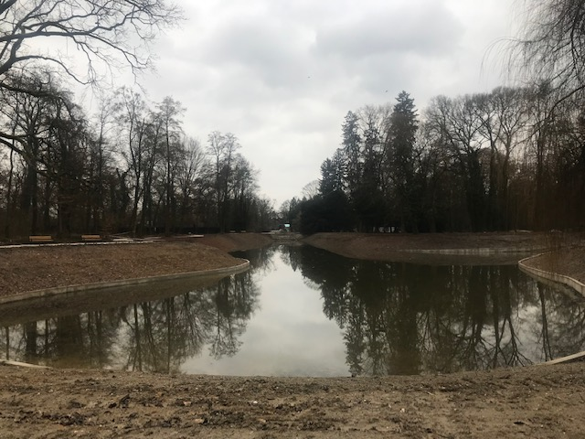

Vijesti
Primopredaja specijalnoga navalnog vatrogasnog vozila
Radi se o vozilu za borbu protiv velikih požara, ali se korist i u hitnim intervencijama, npr. u prometnim nesrećama i drugim akcijama spašavanja, a godišnje zatreba na oko 350 intervencija. More ...
Novi Hrvatski prirodoslovni muzej po mjeri svjetskih metropola
Danas je u atriju Hrvatskog prirodoslovnog muzeja svečano otvoreno gradilište trenutno najvećeg infrastrukturnog projekta u kulturi Grada Zagreba More ...

Obnovljeno Prvo i Drugo maksimirsko jezero
Puštanje vode u obnovljeno Prvo i Drugo maksimirsko jezero u sklopu europskog projekta More ...

Predstavljanje 94 mil. kn vrijednog projekta smanjenja komunalnog otpada u Gradu Zagrebu
Grad Zagreb i Zagrebački holding d.o.o., zajedno sa podružnicama Čistoća i Zrinjevac, udružili su snage za čišći Zagreb. More ...
Trešnjevka dobila novi objekt Osnovne škole ''August Šenoa''
Novoizgrađeni školski objekt sa sportskom dvoranom Područne škole Pongračevo OŠ Augusta Šenoe More ...